chapter12. 모듈
모듈이란 함수나 변수들, 또는 클래스들을 모아놓은 파일이다.
다른 파이썬 프로그램에서 불러쓸 수 있게끔 만들어진 파이썬 파일을 모듈이라 부른다.
1.모듈 만들고 불러보기
우선 모듈에 대해서 자세히 살펴보기 전에 간단한 모듈을 한번 만들어 보기로 하자.
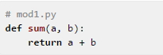
-> 위와 같이 sum 함수만을 가지고 있는 파일 mod1.py를 만들고 저장하여 보자.
그리고 아래와 같이 도스창(cmd 명령 수행시 나오는 창)을 열고 mod1.py를 저장한 디렉토리로 이동
(예: 만약 mod1.py 파일이 c:/python 디렉토리에 저장되어 있다면 cd c:/python)한 다음에 대화형 인터프리터를 실행(python 명령을 수행)한다.
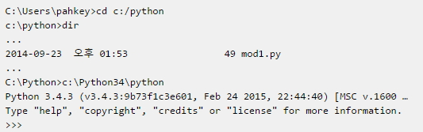
우리가 만든 mod1.py라는 파일을 파이썬에서 불러서 쓰려면 어떻게 할까? 다음은 import의 사용법이다.
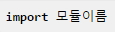
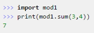
위처럼 mod1.py를 불러오기 위해서 import mod1과 같이 하였다. import mod1.py과 같이 사용하는 실수를 하지 않도록 주의 하자.
import는 이미 만들어진 파이썬 모듈을 사용할 수 있게 해주는 것이다.
mod1.py파일에 있는 sum함수를 이용하기 위해서는 위의 예에서와 같이 mod1.sum처럼 모듈이름 뒤에 '.'(도트 연산자)를 붙이고 함수이름을 써서 사용할 수 있다.
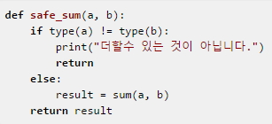
이 함수를 mod1.py에 추가 시킨다음 다시 대화형 인터프리터를 열고 다음과 같이 따라하자.
>>>import mod1
>>>print(mod1.safe_sum(3,4))
->결과 : 7
>>>print(mod1.safe_sum(1,'a'))
->결과 : 더할 수 있는 값이 아닙니다.
None
때로는 mod1.sum, mod1.safe_sum 처럼 쓰기 보다는 그냥 sum, safe_sum 처럼 함수를 쓰고 싶은 사람도 있을 것이다.
이럴때는 “from 모듈이름 import 모듈함수”를 사용하면 된다.
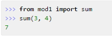
sum함수와 safe_sum함수를 둘다 사용하고 싶을 땐 어떻게 해야 할까?
'
-> "from mod1 import sum,safe_sum" or "from mod1 import * "
2. if __name__ == "__main__": 의 의미
이번에는 mod1.py 파일에 다음과 같이 추가하여 보자.
# mod1.py
def sum(a, b):
return a+b
def safe_sum(a, b):
if type(a) != type(b):
print("더할수 있는 것이 아닙니다.")
return
else:
result = sum(a, b)
return result
print(safe_sum('a', 1))
print(safe_sum(1, 4))
print(sum(10, 10.4))
* 도스창을 열고 파이썬이 설치 된 파일로 접근을 한다.
우리는 단지 mod1.py파일의 sum과 safe_sum 함수만을 쓰려고 했는데
위처럼 import mod1을 하는 순간 mod1.py가 실행이 되어서 결과값을 출력한다.
이러한 것을 방지하기 위한 것이 있다.
mod1.py파일에서 마지막 부분을 다음과 같이 수정해 보자.
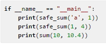
직접 이 파일을 실행시켰을 때는 __name__ == "__main__" 이 참이 되어 if문 다음 문장들이 수행되고
대화형 인터프리터나 다른 파일에서 이 모듈을 불러서 쓸때는 __name__ == "__main__"이 거짓이 되어 if문 아래문장들이 수행되지 않도록 한다는 뜻이다.
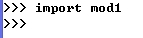
3. 클래스나 변수등을 포함한 모듈
위에서 알아본 모듈은 함수만을 포함하고 있지만 클래스나 변수등을 포함할 수도 있다.
# mod2.py
PI = 3.141592
class Math:
def solv(self, r):
return PI * (r ** 2)
def sum(a, b):
return a+b
if __name__ == "__main__":
print(PI)
a = Math()
print(a.solv(2))
print(sum(PI , 4.4))
C:/Python34 란 디렉토리에 저장했다고 가정을 해 보자.
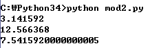
대화형 인터프리터를 열고 다음과 같이 따라해 보자.
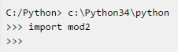
-> __name__ == "__main__"이 거짓이 되므로 아무런 값도 출력되지 않는다.
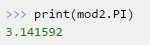
4. 다른 프로그램 파일에서 만든 모듈 불러오기
지금까지 대화형 인터프리터 만을 이용했는데 이번에는 새롭게 만들 파이썬 파일 내에서 이전에 만들어 놓았던 모듈을 불러서 쓰는 방법에 대해서 알아보기로 하자.
바로 이전에 만든 모듈인 mod2.py라는 파일을 새롭게 만들 파이썬 프로그램 파일에서 불러보도록 하자.
# modtest.py
import mod2
result = mod2.sum(3, 4)
print(result)
대화형 인터프리터에서 한 것과 마찬가지 방법으로 import mod2로 mod2 모듈을 불러와서 쓰면 된다.
여기서 중요한 것은 modtest.py라는 파일과 mod2.py라는 파일이 동일한 디렉토리에 있어야만 한다는 점이다.
<출처> 점프 투 파이썬, 박응용(https://wikidocs.net/book/1)
<뒤로> | <메뉴> | <앞으로>